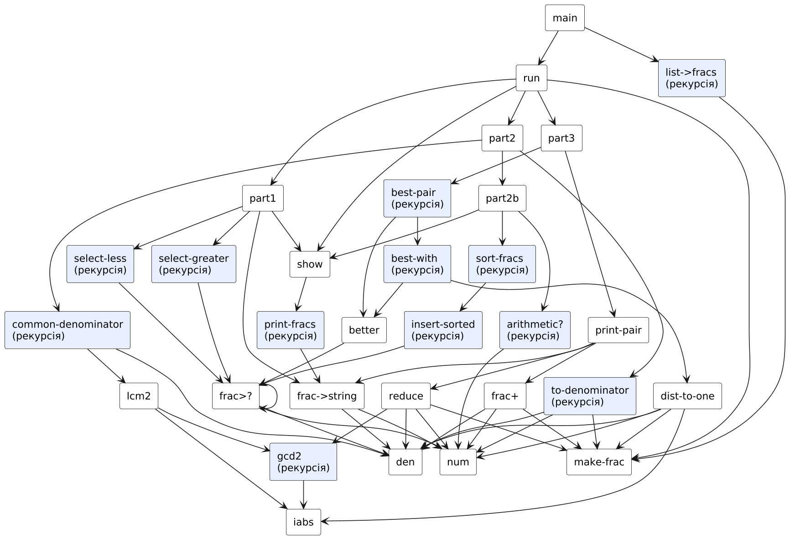
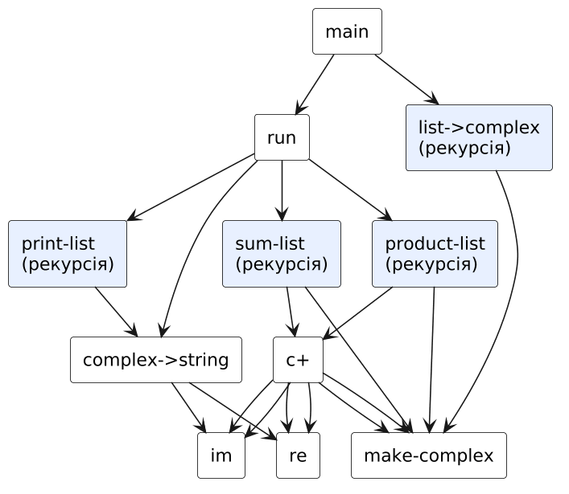
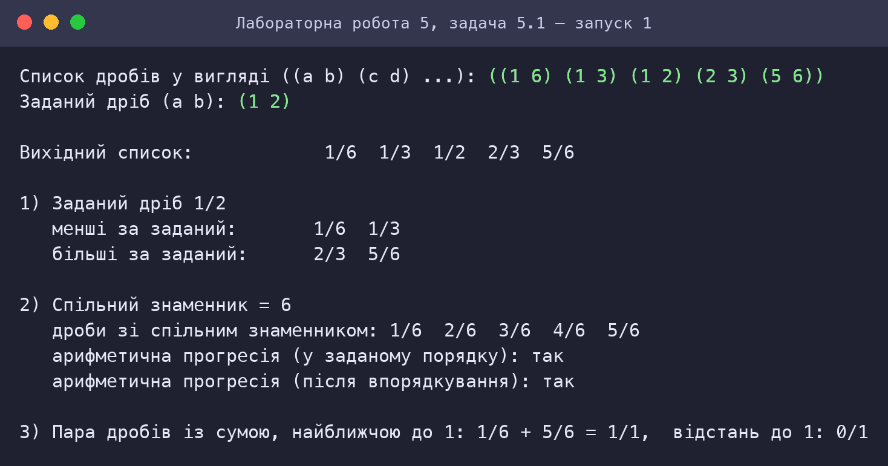
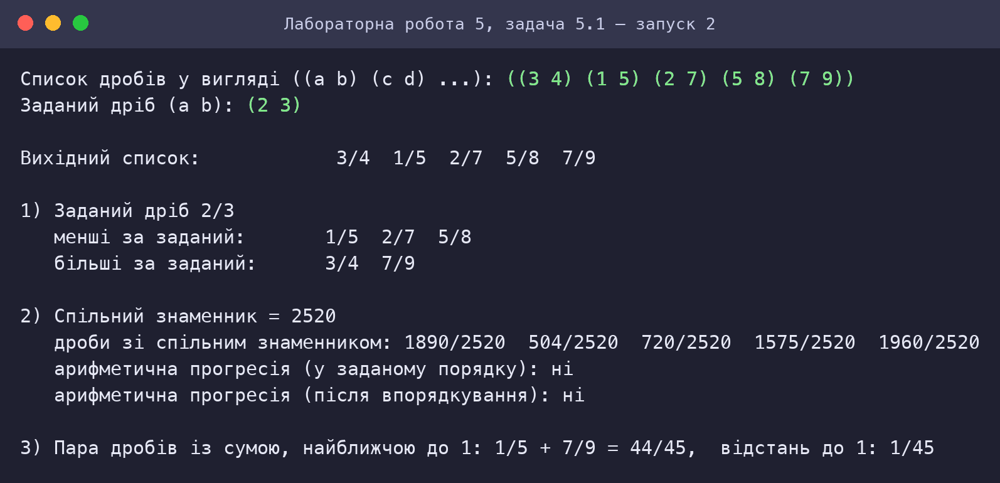
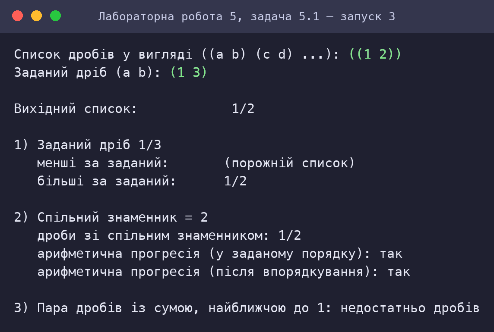
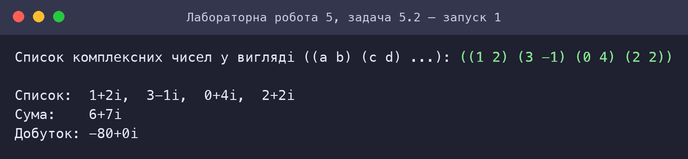
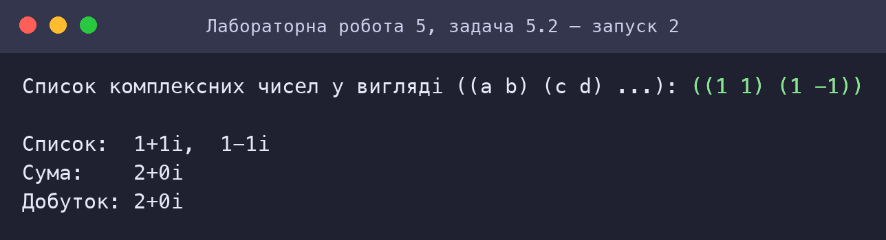
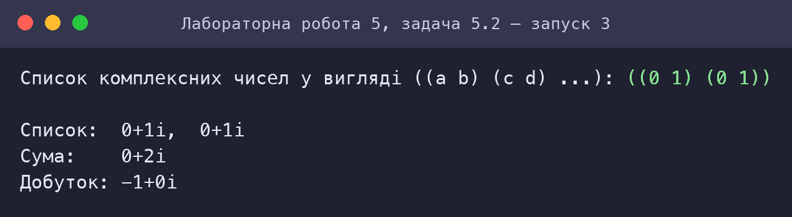

Обробка раціональних та комплексних чисел мовами функціонального програмування
Варіант 3
Київ — 2026
Мета роботи
Мета подана за методичними вказівками до лабораторних занять з дисципліни «Функціональне програмування» (Київ, 2025).
Умова завдання
Варіант 3. Умова наведена з методичних вказівок.
Задача 5.1
3.1 Створити список, елементами якого є раціональні числа у вигляді дробів. Виконати такі дії над дробами:
- побудувати два нових списки, в один включити всі дроби вихідного списку, що менші за заданий дріб, в інший — усі дроби, що більші за заданий дріб. Для порівняння можна використати умови: якщо a1·b2 < a2·b1, то a1/b1 менший за a2/b2; якщо a1·b2 > a2·b1, то a1/b1 більший за a2/b2;
- привести дроби вихідного списку до спільного знаменника, зберегти приведені дроби у новому списку та перевірити, чи утворюють дроби нового списку арифметичну прогресію;
- знайти в списку пару дробів, сума яких найближча до 1.
Задача 5.2
3.2 Створити список з комплексних чисел, які задані в алгебраїчній формі a + ib. Надрукувати список. Обчислити суму і добуток комплексних чисел списку.
Аналіз задачі та математичне забезпечення
Задача 5.1: Список раціональних чисел (дробів)
Абстракція даних
Дріб подається парою (чисельник . знаменник) із додатним знаменником; доступ до частин — селекторами num, den, конструктор — make-frac. Решта програми не залежить від внутрішнього подання — це бар’єр абстракції: можна змінити подання (наприклад, на список) без зміни алгоритмів.
Власні арифметичні процедури
Використані лише примітиви + − * quotient remainder; НОД за алгоритмом Евкліда (gcd2), НСК(a, b) = |a·b| / НОД(a, b) (lcm2), модуль iabs.
Алгоритми
- Порівняння дробів без дійсної арифметики: a1/b1 < a2/b2 ⇔ a1b2 < a2b1 (bi > 0). Списки менших і більших будуються фільтрацією
select-less,select-greater; рівні заданому дробу не потрапляють ні в один список. - Спільний знаменник: D = НСК усіх знаменників (згортка
common-denominator); кожен дріб a/b перетворюється на (a·D/b)/D (to-denominator), без скорочення. Арифметична прогресія: дроби зі спільним знаменником утворюють прогресію, якщо різниці сусідніх чисельників рівні (arithmetic?); перевірка виконується у заданому порядку та після впорядкування (сортування вставкамиsort-fracs). - Пара із сумою, найближчою до 1: перебір усіх пар (i < j) — O(n²). Відстань |a/b + c/d − 1| = |ad + cb − bd| / (bd) подається дробом (
dist-to-one) і порівнюється черезfrac<?— без втрати точності.
Приклад
Список (1/6 1/3 1/2 2/3 5/6), заданий дріб 1/2: менші — 1/6, 1/3; більші — 2/3, 5/6; D = 6, дроби 1/6 2/6 3/6 4/6 5/6 утворюють арифметичну прогресію (різниця 1/6); пара 1/6 + 5/6 = 1.
Задача 5.2: Список комплексних чисел
Подання і формули
Комплексне число z = a + ib — пара (a . b). Операції (власна реалізація):
Сума та добуток списку — рекурсивне згортання з нейтральним елементом (0 + 0i для суми, 1 + 0i для добутку): sum(z1 … zn) = z1 + sum(z2 … zn). Складність O(n).
Виведення в алгебраїчній формі a+bi / a−bi здійснює complex->string (знак уявної частини виводиться окремо).
Контроль
i·i = (0 + 1i)·(0 + 1i) = −1 + 0i — співпадає з означенням уявної одиниці; (1 + i)(1 − i) = 2 — добуток спряжених.
HIPO-діаграма (схема виклику процедур)
Діаграма показує ієрархію викликів процедур (стрілка A → B означає, що A викликає B); блоки з рекурсією виділено. Допоміжні процедури введення даних (ask-…) для наочності опущено.
Задача 5.1: Список раціональних чисел (дробів)

| Процедура | Вхід (Input) | Обробка / вихід (Process → Output) |
|---|---|---|
main | список дробів, заданий дріб | виклик run |
run | fracs, g | частини 1–3 |
select-less / select-greater | lst, g | дроби менші / більші за g |
common-denominator / to-denominator | lst, d | спільний знаменник і дроби з ним |
arithmetic? / sort-fracs | lst | перевірка прогресії, впорядкування |
best-pair / best-with / better | lst | пара з сумою, найближчою до 1 |
Задача 5.2: Список комплексних чисел

| Процедура | Вхід (Input) | Обробка / вихід (Process → Output) |
|---|---|---|
main | — | запит списку |
sum-list / product-list | lst | сума / добуток |
c+ / c* | z, w | додавання / множення |
complex->string / print-list | z, lst | подання a+bi |
list->complex | список пар | список комплексних чисел |
Код
Код наведено текстом (не скріншотом). Файли можна завантажити та запустити в Dr.Racket (мова R5RS: Мова → Обрати мову → Other languages → R5RS) або в Guile.
Задача 5.1: Список раціональних чисел (дробів)
⬇ task1_fractions.scm;; =====================================================================
;; ЛР5, варіант 3, задача 3.1. Список раціональних чисел (дробів) a/b.
;; Дріб — пара (a . b) із b > 0. Бібліотечні функції НОД/НСК/abs не використовуються —
;; усі потрібні процедури написані нижче. Дії:
;; 1) два нових списки: дроби менші за заданий і дроби більші за заданий;
;; 2) приведення дробів до спільного знаменника та перевірка, чи утворюють вони
;; арифметичну прогресію;
;; 3) пошук пари дробів, сума яких найближча до 1.
;; =====================================================================
;; ---------- Арифметика цілих ----------
(define (iabs x) (if (< x 0) (- x) x))
(define (gcd2 a b) (if (= b 0) (iabs a) (gcd2 b (remainder a b))))
(define (lcm2 a b) (quotient (* (iabs a) (iabs b)) (gcd2 a b)))
;; ---------- Дроби ----------
(define (num f) (car f))
(define (den f) (cdr f))
(define (make-frac a b) (cons a b))
(define (reduce f) (make-frac (quotient (num f) (gcd2 (num f) (den f))) (quotient (den f) (gcd2 (num f) (den f)))))
;; a1/b1 < a2/b2 <=> a1*b2 < a2*b1 (знаменники додатні)
(define (frac<? f g) (< (* (num f) (den g)) (* (num g) (den f))))
(define (frac>? f g) (frac<? g f))
(define (frac+ f g)
(make-frac (+ (* (num f) (den g)) (* (num g) (den f))) (* (den f) (den g))))
;; Відстань від суми до 1, у вигляді дробу |ad + cb - bd| / (bd)
(define (dist-to-one f g)
(make-frac (iabs (- (+ (* (num f) (den g)) (* (num g) (den f))) (* (den f) (den g))))
(* (den f) (den g))))
;; Вхідні дані: список пар (a b) → список дробів
(define (list->fracs lst)
(if (null? lst) '() (cons (make-frac (car (car lst)) (cadr (car lst))) (list->fracs (cdr lst)))))
;; ---------- Виведення ----------
(define (frac->string f)
(string-append (number->string (num f)) "/" (number->string (den f))))
(define (print-fracs lst)
(cond ((null? lst) (display "(порожній список)"))
((null? (cdr lst)) (display (frac->string (car lst))))
(else (display (frac->string (car lst))) (display " ") (print-fracs (cdr lst)))))
(define (show label lst) (display label) (print-fracs lst) (newline))
;; ---------- Завдання 1: менші / більші за заданий дріб ----------
(define (select-less lst g)
(cond ((null? lst) '())
((frac<? (car lst) g) (cons (car lst) (select-less (cdr lst) g)))
(else (select-less (cdr lst) g))))
(define (select-greater lst g)
(cond ((null? lst) '())
((frac>? (car lst) g) (cons (car lst) (select-greater (cdr lst) g)))
(else (select-greater (cdr lst) g))))
;; ---------- Завдання 2: спільний знаменник, арифметична прогресія ----------
(define (common-denominator lst)
(if (null? lst) 1 (lcm2 (den (car lst)) (common-denominator (cdr lst)))))
(define (to-denominator lst d)
(if (null? lst)
'()
(cons (make-frac (* (num (car lst)) (quotient d (den (car lst)))) d)
(to-denominator (cdr lst) d))))
;; Чисельники однакового знаменника утворюють арифметичну прогресію, якщо різниці сусідніх рівні
(define (arithmetic? lst)
(or (null? lst) (null? (cdr lst)) (null? (cddr lst))
(and (= (- (num (cadr lst)) (num (car lst))) (- (num (caddr lst)) (num (cadr lst))))
(arithmetic? (cdr lst)))))
;; Сортування вставками (щоб перевірити прогресію й у впорядкованому вигляді)
(define (insert-sorted f sorted)
(cond ((null? sorted) (list f))
((frac<? f (car sorted)) (cons f sorted))
(else (cons (car sorted) (insert-sorted f (cdr sorted))))))
(define (sort-fracs lst)
(if (null? lst) '() (insert-sorted (car lst) (sort-fracs (cdr lst)))))
;; ---------- Завдання 3: пара із сумою, найближчою до 1 ----------
;; Результат — список (f g відстань) або '() , якщо дробів менше двох
(define (better a b) (cond ((null? a) b) ((null? b) a) ((frac<? (caddr b) (caddr a)) b) (else a)))
(define (best-with f lst)
(if (null? lst)
'()
(better (list f (car lst) (dist-to-one f (car lst))) (best-with f (cdr lst)))))
(define (best-pair lst)
(if (or (null? lst) (null? (cdr lst)))
'()
(better (best-with (car lst) (cdr lst)) (best-pair (cdr lst)))))
;; ---------- Інтерфейс ----------
(define (main)
(display "Список дробів у вигляді ((a b) (c d) ...): ") (ask-given (read)))
(define (ask-given lst)
(display "Заданий дріб (a b): ") (run (list->fracs lst) (read)))
(define (run fracs g)
(newline)
(show "Вихідний список: " fracs)
(part1 fracs (make-frac (car g) (cadr g)))
(part2 fracs)
(part3 fracs))
(define (part1 fracs g)
(newline)
(display "1) Заданий дріб ") (display (frac->string g)) (newline)
(show " менші за заданий: " (select-less fracs g))
(show " більші за заданий: " (select-greater fracs g)))
(define (part2 fracs)
(newline)
(display "2) Спільний знаменник = ") (display (common-denominator fracs)) (newline)
(part2b (to-denominator fracs (common-denominator fracs))))
(define (part2b common)
(show " дроби зі спільним знаменником: " common)
(display " арифметична прогресія (у заданому порядку): ")
(display (if (arithmetic? common) "так" "ні")) (newline)
(display " арифметична прогресія (після впорядкування): ")
(display (if (arithmetic? (sort-fracs common)) "так" "ні")) (newline))
(define (part3 fracs)
(newline)
(display "3) Пара дробів із сумою, найближчою до 1: ")
(print-pair (best-pair fracs)))
(define (print-pair r)
(if (null? r)
(begin (display "недостатньо дробів") (newline))
(begin (display (frac->string (car r))) (display " + ") (display (frac->string (cadr r)))
(display " = ") (display (frac->string (reduce (frac+ (car r) (cadr r)))))
(display ", відстань до 1: ") (display (frac->string (reduce (caddr r))))
(newline))))
Задача 5.2: Список комплексних чисел
⬇ task2_complex.scm;; =====================================================================
;; ЛР5, варіант 3, задача 3.2. Список комплексних чисел в алгебраїчній формі a + ib.
;; Виведення списку; обчислення суми та добутку всіх чисел списку.
;; Комплексне число — пара (a . b): a — дійсна частина, b — уявна. Вбудовані комплексні
;; типи й бібліотеки не використовуються.
;; (a + ib) + (c + id) = (a + c) + i(b + d)
;; (a + ib) * (c + id) = (ac - bd) + i(ad + bc)
;; Нейтральні елементи: 0 + 0i для суми, 1 + 0i для добутку.
;; =====================================================================
(define (re z) (car z))
(define (im z) (cdr z))
(define (make-complex a b) (cons a b))
(define (c+ z w) (make-complex (+ (re z) (re w)) (+ (im z) (im w))))
(define (c* z w)
(make-complex (- (* (re z) (re w)) (* (im z) (im w)))
(+ (* (re z) (im w)) (* (im z) (re w)))))
;; Сума та добуток списку — рекурсивне згортання
(define (sum-list lst)
(if (null? lst) (make-complex 0 0) (c+ (car lst) (sum-list (cdr lst)))))
(define (product-list lst)
(if (null? lst) (make-complex 1 0) (c* (car lst) (product-list (cdr lst)))))
;; Вхідні дані: список пар (a b)
(define (list->complex lst)
(if (null? lst)
'()
(cons (make-complex (car (car lst)) (cadr (car lst))) (list->complex (cdr lst)))))
;; ---------- Виведення ----------
;; Формат "a+bi" / "a-bi"; наприклад 3+2i, 1-4i, 0+0i
(define (complex->string z)
(string-append (number->string (re z))
(if (< (im z) 0) "-" "+")
(number->string (if (< (im z) 0) (- (im z)) (im z)))
"i"))
(define (print-list lst)
(cond ((null? lst) (display "(порожній список)"))
((null? (cdr lst)) (display (complex->string (car lst))))
(else (display (complex->string (car lst))) (display ", ") (print-list (cdr lst)))))
;; ---------- Інтерфейс ----------
(define (main)
(display "Список комплексних чисел у вигляді ((a b) (c d) ...): ")
(run (list->complex (read))))
(define (run lst)
(newline)
(display "Список: ") (print-list lst) (newline)
(display "Сума: ") (display (complex->string (sum-list lst))) (newline)
(display "Добуток: ") (display (complex->string (product-list lst))) (newline))
Скріншот роботи та результату
Знімки консолі відтворюють роботу програм: запуск виконано в інтерпретаторі Guile 3.0 (R5RS-сумісний); введені користувачем значення виділено зеленим. Для кожного запуску наведено умови та результат.
Задача 5.1: Список раціональних чисел (дробів)



Задача 5.2: Список комплексних чисел



Оцінка достовірності результату
Дроби: фільтрація, спільний знаменник, прогресія, пара ближча до 1 — проти Fraction
| Вхідні дані | Результат програми | Еталон | |
|---|---|---|---|
| 1/6 1/3 1/2 2/3 5/6 / 1/2 | менші: 1/6 1/3; більші: 2/3 5/6; знам.=6; пара: 1/6 5/6 | менші: 2 шт.; більші: 2 шт.; НСК=6; відстань=1/6 5/6, відстань 0 | ✓ |
| 3/4 1/5 2/7 5/8 7/9 / 2/3 | менші: 1/5 2/7 5/8; більші: 3/4 7/9; знам.=2520; пара: 1/5 7/9 | менші: 3 шт.; більші: 2 шт.; НСК=2520; відстань=1/5 7/9, відстань 1/45 | ✓ |
| 1/2 1/3 1/6 3/8 5/12 7/10 2/9 / 1/4 | менші: 1/6 2/9; більші: 1/2 1/3 3/8 5/12 7/10; знам.=360; пара: 1/3 7/10 | менші: 2 шт.; більші: 5 шт.; НСК=360; відстань=1/3 7/10, відстань 1/30 | ✓ |
| 2/4 6/8 10/15 9/12 / 3/5 | менші: 2/4; більші: 6/8 10/15 9/12; знам.=120; пара: 2/4 10/15 | менші: 1 шт.; більші: 3 шт.; НСК=120; відстань=2/4 10/15, відстань 1/6 | ✓ |
| 1/3 2/3 1/1 4/3 / 1/1 | менші: 1/3 2/3; більші: 4/3; знам.=3; пара: 1/3 2/3 | менші: 2 шт.; більші: 1 шт.; НСК=3; відстань=1/3 2/3, відстань 0 | ✓ |
5 / 5 збігів.
Комплексні числа: сума й добуток проти complex Python
| Вхідні дані | Результат програми | Еталон | |
|---|---|---|---|
| (1+2i) (3-1i) (0+4i) (2+2i) | сума (6 . 7), добуток (-80 . 0) | сума (6+7j), добуток (-80+0j) | ✓ |
| (1+1i) (1-1i) | сума (2 . 0), добуток (2 . 0) | сума (2+0j), добуток (2+0j) | ✓ |
| (0+1i) (0+1i) | сума (0 . 2), добуток (-1 . 0) | сума 2j, добуток (-1+0j) | ✓ |
| (2-3i) (-1+5i) (4+4i) (0+0i) (7-2i) | сума (12 . 4), добуток (0 . 0) | сума (12+4j), добуток 0j | ✓ |
4 / 4 збігів.
Перевірка коду інструментами штучного інтелекту (простота, Clean code)
Аналіз коду виконав ШІ-асистент Claude (Anthropic): прочитано кожну програму, перевірено її за критеріями чистого коду й за вимогами завдання, автоматично пораховано метрики та пошук заборонених конструкцій. Нижче — критерії, вимірювання й висновки; випадки, де за результатами перевірки код було змінено, позначені «знайдено й виправлено».
Критерії
| Критерій | Що перевірялось |
|---|---|
| Іменування | імена відображають зміст (дієслова для дій, іменники для даних) |
| Малі функції | одна процедура — одна відповідальність; довжина процедур |
| Відсутність побічних ефектів | немає set!, змінних стану; значення передаються параметрами |
| Відповідність обмеженням | заборонені конструкції (let, let*, letrec, do, while, for, loop) |
| Простота | немає дублювання обчислень, зайвих абстракцій; коментарі пояснюють «чому», а не «що» |
| Коректність і тестованість | чисті процедури можна перевірити окремо (див. розділ «Оцінка достовірності») |
Задача 5.1: Список раціональних чисел (дробів)
| Рядків | Рядків коду | Рядків коментарів | Процедур | Середня довжина | Максимальна довжина |
|---|---|---|---|---|---|
| 134 | 93 | 22 | 33 | 2.8 | 7 |
| let | let* | letrec | set! | do | while/for/loop |
|---|---|---|---|---|---|
| 0 | 0 | 0 | 0 | 0 | 0 |
Висновки перевірки
- Дотримано бар’єр абстракції: інші процедури працюють лише через
num,den,make-frac; арифметика цілих — власна (gcd2,lcm2,iabs), як вимагає завдання. - Функція
betterінкапсулює правило вибору кращої пари —best-pairіbest-withзалишаються простими. - Порівняння дробів — через цілі добутки: немає похибок дійсної арифметики.
- Зауваження: у цій версії дроби не скорочуються автоматично при створенні; скорочення (
reduce) застосовується лише при виведенні суми. Автоматичне скорочення вmake-fracспростило б деякі алгоритми, але змінило б «спільний знаменник» для вхідного списку. - Складність пошуку пари O(n²) — прийнятна для списків малого розміру.
Задача 5.2: Список комплексних чисел
| Рядків | Рядків коду | Рядків коментарів | Процедур | Середня довжина | Максимальна довжина |
|---|---|---|---|---|---|
| 55 | 32 | 14 | 12 | 2.7 | 5 |
| let | let* | letrec | set! | do | while/for/loop |
|---|---|---|---|---|---|
| 0 | 0 | 0 | 0 | 0 | 0 |
Висновки перевірки
- Пара (a . b) і селектори
re,imвідокремлюють подання від операцій; формули в коментарях. - Сума та добуток списку реалізовані як згортка з нейтральним елементом — коректно обробляють порожній список.
- Зауваження: числа можуть бути цілими, раціональними чи дійсними — точність залежить від типу чисел Scheme (цілі й раціональні обчислюються точно).
Примітка: метрики розраховано автоматично; змістовні висновки — експертна оцінка асистента. Перевірку слід розглядати як допоміжну: остаточну відповідальність за код несе автор.
Висновок
Реалізовано обробку раціональних і комплексних чисел на основі абстракції даних: дроби та комплексні числа подано парами, а всі операції (НОД, НСК, порівняння, спільний знаменник, перевірка арифметичної прогресії, пошук пари з сумою, найближчою до 1, сума й добуток комплексних чисел) написано власноруч без бібліотечних функцій. Точне (цілочисельне) порівняння дробів виключає похибки дійсної арифметики. Усі 9 порівнянь із Python (fractions.Fraction, complex) збігаються.